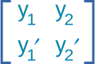
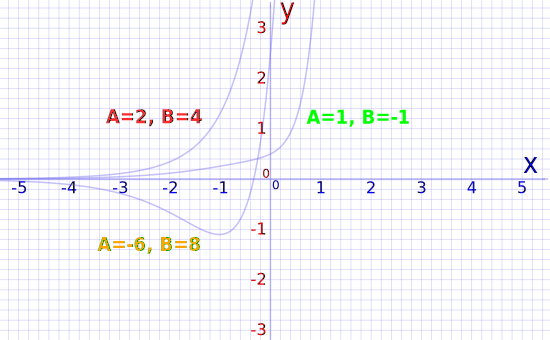

The Method of Variation of Parameters
This page is about second order differential equations of this type:
d2ydx2 + P(x)dydx + Q(x)y = f(x)
where P(x), Q(x) and f(x) are functions of x.
Please read Introduction to Second Order Differential Equations first, it shows how to solve the simpler "homogeneous" case where f(x)=0
Two Methods
There are two main methods to solve equations like
d2ydx2 + P(x)dydx + Q(x)y = f(x)
Undetermined Coefficients which only works when f(x) is a polynomial, exponential, sine, cosine or a linear combination of those.
Variation of Parameters (that we will learn here) which works on a wide range of functions but is a little messy to use.
Variation of Parameters
To keep things simple, we are only going to look at the case:
d2ydx2 + pdydx + qy = f(x)
where p and q are constants and f(x) is a non-zero function of x.The complete solution to such an equation can be found by combining two types of solution:
- The general solution of the homogeneous equation d2ydx2 + pdydx + qy = 0
- Particular solutions of the non-homogeneous equation d2ydx2 + pdydx + qy = f(x)
Note that f(x) could be a single function or a sum of two or more functions.
Once we have found the general solution and all the particular solutions, then the final complete solution is found by adding all the solutions together.
This method relies on integration.
The problem with this method is that, although it may yield a solution, in some cases the solution has to be left as an integral.
Start with the General Solution
On Introduction to Second Order Differential Equations we learn how to find the general solution.
Basically we take the equation
d2ydx2 + pdydx + qy = 0
and reduce it to the "characteristic equation":
r2 + pr + q = 0
Which is a quadratic equation that has three possible solution types depending on the discriminant p2 − 4q. When p2 − 4q is
positive we get two real roots, and the solution is
y = Aer1x + Ber2x
zero we get one real root, and the solution is
y = Aerx + Bxerx
negative we get two complex roots r1 = v + wi and r2 = v − wi, and the solution is
y = evx ( Ccos(wx) + iDsin(wx) )
The Fundamental Solutions of The Equation
In all three cases above "y" is made of two parts:
- y = Aer1x + Ber2x is made of y1 = Aer1x and y2 = Ber2x
- y = Aerx + Bxerx is made of y1 = Aerx and y2 = Bxerx
- y = evx ( Ccos(wx) + iDsin(wx) ) is made of y1 = evxCcos(wx) and y2 = evxiDsin(wx)
y1 and y2 are known as the fundamental solutions of the equation
And y1 and y2 are said to be linearly independent because neither function is a constant multiple of the other.
The Wronskian
When y1 and y2 are the two fundamental solutions of the homogeneous equation
d2ydx2 + pdydx + qy = 0
then the Wronskian W(y1, y2) is the determinant of the matrix

So
W(y1, y2) = y1y2' − y2y1'
The Wronskian is named after the Polish mathematician and philosopher Józef Hoene-Wronski (1776−1853).
Since y1 and y2 are linearly independent, the value of the Wronskian cannot equal zero.
The Particular Solution
Using the Wronskian we can now find the particular solution of the differential equation
d2ydx2 + pdydx + qy = f(x)
using the formula:
yp(x) = −y1(x)∫y2(x)f(x)W(y1, y2)dx + y2(x)∫y1(x)f(x)W(y1, y2)dx
Example 1: Solve d2ydx2 − 3dydx + 2y = e3x
1. Find the general solution of d2ydx2 − 3dydx + 2y = 0
The characteristic equation is: r2 − 3r + 2 = 0
Factor: (r − 1)(r − 2) = 0
r = 1 or 2
So the general solution of the differential equation is y = Aex+Be2x
So in this case the fundamental solutions and their derivatives are:
y1(x) = ex
y1'(x) = ex
y2(x) = e2x
y2'(x) = 2e2x
2. Find the Wronskian:
W(y1, y2) = y1y2' − y2y1' = 2e3x − e3x = e3x
3. Find the particular solution using the formula:
4. First we solve the integrals:
∫y2(x)f(x)W(y1, y2)dx
= ∫e2xe3xe3xdx
= ∫e2xdx
= 12e2x
So:
−y1(x)∫y2(x)f(x)W(y1, y2)dx = −(ex)(12e2x) = −12e3x
And also:
∫y1(x)f(x)W(y1, y2)dx
= ∫exe3xe3xdx
= ∫exdx
= ex
So:
y2(x)∫y1(x)f(x)W(y1, y2)dx = (e2x)(ex) = e3x
Finally:
yp(x) = −y1(x)∫y2(x)f(x)W(y1, y2)dx + y2(x)∫y1(x)f(x)W(y1, y2)dx
= −12e3x + e3x
= 12e3x
and the complete solution of the differential equation d2ydx2 − 3dydx + 2y = e3x is
y = Aex + Be2x + 12e3x
Which looks like this (example values of A and B):

Example 2: Solve d2ydx2 − y = 2x2 − x − 3
1. Find the general solution of d2ydx2 − y = 0
The characteristic equation is: r2 − 1 = 0
Factor: (r − 1)(r + 1) = 0
r = 1 or −1
So the general solution of the differential equation is y = Aex+Be−x
So in this case the fundamental solutions and their derivatives are:
y1(x) = ex
y1'(x) = ex
y2(x) = e−x
y2'(x) = −e−x
2. Find the Wronskian:
W(y1, y2) = y1y2' − y2y1' = −exe−x − exe−x = −2
3. Find the particular solution using the formula:
yp(x) = −y1(x)∫y2(x)f(x)W(y1, y2)dx + y2(x)∫y1(x)f(x)W(y1, y2)dx
4. Solve the integrals:
∫y2(x)f(x)W(y1, y2)dx
= ∫e−x (2x2−x−3)−2dx
= −12 ∫(2x2−x−3)e−xdx
= −12[ −(2x2−x−3)e−x + ∫(4x−1)e−x dx ]
= −12[ −(2x2−x−3)e−x − (4x − 1)e−x + ∫4e−xdx ]
= −12[ −(2x2−x−3)e−x − (4x − 1)e−x − 4e−x ]
= e−x2[ 2x2 − x − 3 + 4x −1 + 4 ]
= e−x2[ 2x2 + 3x ]
So:
−y1(x)∫y2(x)f(x)W(y1, y2)dx = (−ex)[e−x2( 2x2 + 3x )] = −12(2x2 + 3x)
And this one:
∫y1(x)f(x)W(y1, y2)dx
= ∫ex (2x2−x−3)−2dx
= −12 ∫(2x2−x−3)exdx
= −12[ (2x2−x−3)ex − ∫(4x−1)ex dx ]
= −12[ (2x2−x−3)ex − (4x − 1)ex + ∫4exdx ]
= −12[ (2x2−x−3)ex − (4x − 1)ex + 4ex ]
= −ex2[ 2x2 − x − 3 − 4x + 1 + 4 ]
= −ex2[ 2x2 − 5x + 2 ]
So:
y2(x)∫y1(x)f(x)W(y1, y2)dx = (e−x)[−ex2( 2x2 − 5x + 2 ) ] = −12( 2x2 − 5x + 2 )
Finally:
yp(x) = −y1(x)∫y2(x)f(x)W(y1, y2)dx + y2(x)∫y1(x)f(x)W(y1, y2)dx
= −12( 2x2 + 3x ) − 12( 2x2 − 5x + 2 )
= −12( 4x2 − 2x + 2 )
= −2x2 + x − 1
and the complete solution of the differential equation d2ydx2 − y = 2x2 − x − 3 is
y = Aex + Be−x − 2x2 + x − 1
(This is the same answer that we got in Example 1 on the page Method of undetermined coefficients.)
Example 3: Solve d2ydx2 − 6dydx + 9y =1x
1. Find the general solution of d2ydx2 − 6dydx + 9y = 0
The characteristic equation is: r2 − 6r + 9 = 0
Factor: (r − 3)(r − 3) = 0
r = 3
So the general solution of the differential equation is y = Ae3x + Bxe3x
And so in this case the fundamental solutions and their derivatives are:
y1(x) = e3x
y1'(x) = 3e3x
y2(x) = xe3x
y2'(x) = (3x + 1)e3x
2. Find the Wronskian:
W(y1, y2) = y1y2' − y2y1' = (3x + 1)e3xe3x − 3xe3xe3x = e6x
3. Find the particular solution using the formula:
∫y2(x)f(x)W(y1, y2)dx
= ∫(xe3x)x−1 e6xdx (Note: 1x = x−1)
= ∫e−3xdx
= −13e−3x
So:
−y1(x)∫y2(x)f(x)W(y1, y2)dx = −(e3x)(−13e−3x) = 13
And this one:
∫y1(x)f(x)W(y1, y2)dx
= ∫e3xx−1e6xdx
= ∫e−3xx−1dx
This cannot be integrated, so this is an example where the answer has to be left as an integral.
So:
y2(x)∫y1(x)f(x)W(y1, y2)dx = ( xe3x )( ∫e−3xx−1dx ) = xe3x∫e−3xx−1dx
Finally:
yp(x) = −y1(x)∫y2(x)f(x)W(y1, y2)dx + y2(x)∫y1(x)f(x)W(y1, y2)dx
= 13 + xe3x∫e−3xx−1dx
So the complete solution of the differential equation d2ydx2 − 6dydx + 9y = 1x is
y = Ae3x + Bxe3x + 13 + xe3x∫e−3xx−1dx
Example 4 (Harder example): Solve d2ydx2 − 6dydx + 13y = 195cos(4x)
This example uses the following trigonometric identities
sin2(θ) + cos2(θ) = 1
sin(θ ± φ) = sin(θ)cos(φ) ± cos(θ)sin(φ)
cos(θ ± φ) = cos(θ)cos(φ) sin(θ)sin(φ)
sin(θ)cos(φ) = 12[sin(θ
+ φ) + sin(θ − φ)]
cos(θ)cos(φ) = 12[cos(θ
− φ) + cos(θ + φ)]
1. Find the general solution of d2ydx2 − 6dydx + 13y = 0
The characteristic equation is: r2 − 6r + 13 = 0
Use the quadratic equation formula
x = −b ± √(b2 − 4ac)2a
with a = 1, b = −6 and c = 13
So:
r = −(−6) ± √[(−6)2 − 4(1)(13)] 2(1)
= 6 ± √[36−52] 2
= 6 ± √[−16] 2
= 6 ± 4i 2
= 3 ± 2i
So α = 3 and β = 2
⇒ y = e3x[Acos(2x) + iBsin(2x)]
So in this case we have:
y1(x) = e3xcos(2x)
y1'(x) = e3x[3cos(2x) − 2sin(2x)]
y2(x) = e3xsin(2x)
y2'(x) = e3x[3sin(2x) + 2cos(2x)]
2. Find the Wronskian:
W(y1, y2) = y1y2' − y2y1'
= e6xcos(2x)[3sin(2x) + 2cos(2x)] − e6xsin(2x)[3cos(2x) − 2sin(2x)]
= e6x[3cos(2x)sin(2x) +2cos2(2x) − 3sin(2x)cos(2x) + 2sin2(2x)]
=2e6x
3. Find the particular solution using the formula:
yp(x) = −y1(x)∫y2(x)f(x)W(y1, y2)dx + y2(x)∫y1(x)f(x)W(y1, y2)dx
∫y2(x)f(x)W(y1, y2)dx
= ∫e3xsin(2x)[195cos(4x)] 2e6xdx
= 1952∫e−3xsin(2x)cos(4x)dx
= 1954∫e−3x[sin(6x) − sin(2x)]dx ... (1)
In this case, we won’t do the integration yet, for reasons that will become clear in a moment.
The other integral is:
∫y1(x)f(x)W(y1, y2)dx
= ∫e3xcos(2x)[195cos(4x)]2e6xdx
= 1952∫e−3xcos(2x)cos(4x)dx
= 1954∫e−3x[cos(6x) + cos(2x)]dx ... (2)
From equations (1) and (2) we see that there are four very similar
integrations that we need to perform:
I1 = ∫e−3xsin(6x)dx
I2 = ∫e−3xsin(2x)dx
I3 = ∫e−3xcos(6x)dx
I4 = ∫e−3xcos(2x)dx
Each of these could be obtained by using Integration by Parts twice, but there’s an easier method:
I1 = ∫e−3xsin(6x)dx = −16e−3xcos(6x) − 36∫e−3xcos(6x)dx = − 16e−3xcos(6x) − 12I3
⇒ 2I1 + I3 = − 13e−3xcos(6x) ... (3)
I2 = ∫e−3xsin(2x)dx = −12e−3xcos(2x) − 32∫e−3xcos(2x)dx = − 12e−3xcos(2x) − 32I4
⇒ 2I2 + 3I4 = − e−3xcos(2x) ... (4)
I3 = ∫e−3xcos(6x)dx
= 16e−3xsin(6x)
+ 36∫e−3xsin(6x)dx
= 16e−3xsin(6x)
+ 12I1
⇒ 2I3 − I1 = 13e−3xsin(6x)
... (5)
I4 = ∫e−3xcos(2x)dx
= 12e−3xsin(2x)
+ 32∫e−3xsin(2x)dx
= 12e−3xsin(2x) + 32I2
⇒ 2I4 − 3I2 = e−3xsin(2x) ... (6)
Solve equations (3) and (5) simultaneously:
2I1 + I3 = − 13e−3xcos(6x) ... (3)
2I3 − I1 = 13e−3xsin(6x) ... (5)
Multiply equation (5) by 2 and add them together (term I1 will neutralize):
⇒ 5I3 = − 13e−3xcos(6x) + 23e−3xsin(6x)
= 13e−3x[2sin(6x) − cos(6x)]
⇒ I3 = 115e−3x[2sin(6x) − cos(6x)]
Multiply equation (3) by 2 and subtract (term I3 will neutralize):
⇒ 5I1 = − 23e−3xcos(6x) − 13e−3xsin(6x)
= − 13e−3x[2cos(6x) + sin(6x)]
⇒ I1 = − 115e−3x[2cos(6x) + sin(6x)]
Solve equations (4) and (6) simultaneously:
2I2 + 3I4 = − e−3xcos(2x) ... (4)
2I4 − 3I2 = e−3xsin(2x) ... (6)
Multiply equation (4) by 3 and equation (6) by 2 and add (term I2 will neutralize):
⇒ 13I4 = − 3e−3xcos(2x) + 2e−3xsin(2x)
=e−3x[2sin(2x) − 3 cos(2x)]
⇒ I4 = 113e−3x[2sin(2x) − 3cos(2x)]
Multiply equation (4) by 2 and equation (6) by 3 and subtract (term I4 will neutralize):
⇒ 13I2 = − 2e−3xcos(2x) − 3e−3xsin(2x)
=− e−3x[2cos(2x) + 3 sin(2x)]
⇒ I2 = − 113e−3x[2cos(2x) + 3sin(2x)]
Substitute into (1) and (2):
∫y2(x)f(x)W(y1, y2)dx
= 1954∫e−3x[sin(6x) − sin(2x)]dx ... (1)
= 1954[− 115e−3x[2cos(6x) + sin(6x)] − [−113e−3x[2cos(2x) + 3sin(2x)]]]
= e−3x4[−13(2cos(6x)+sin(6x))+15(2 cos(2x)+3sin(2x))]
∫y1(x)f(x)W(y1, y2)dx
= 1954∫e−3x[cos(6x) + cos(2x)]dx ... (2)
= 1954[115e−3x[2sin(6x) − cos(6x)] + 113e−3x[2sin(2x) − 3cos(2x)]]
= e−3x4[13(2sin(6x) − cos(6x)) + 15(2sin(2x) − 3cos(2x))]
So yp(x) = −y1(x)∫y2(x)f(x)W(y1, y2)dx + y2(x)∫y1(x)f(x)W(y1, y2)dx
= − e3xcos(2x)e−3x4[−13(2cos(6x)+sin(6x)) + 15(2 cos(2x)+3sin(2x))] + e3xsin(2x)e−3x4[13(2sin(6x) − cos(6x)) + 15(2sin(2x) − 3cos(2x))]
= − 14cos(2x) [−13(2cos(6x) − sin(6x)) + 15(2 cos(2x) + 3sin(2x))] +14 sin(2x)[13(2sin(6x) − cos(6x)) + 15(2 sin(2x) − 3cos(2x))]
= 14[26cos(2x)cos(6x) + 13cos(2x)sin(6x) − 30cos2(2x) − 45cos(2x)sin(2x) + 26sin(2x)sin(6x) − 13sin(2x)cos(6x) + 30sin2(2x) − 45sin(2x)cos(2x)]
= 14[26[cos(2x)cos(6x) + sin(2x)sin(6x)] + 13[cos(2x)sin(6x) − sin(2x)cos(6x)] − 30[cos2(2x) − sin2(2x)] − 45[cos(2x)sin(2x) + sin(2x)cos(2x)]]
= 14[26cos(4x) + 13sin(4x) − 30cos(4x) − 45sin(4x)]
= 14[−4cos(4x) − 32sin(4x)]
= −cos(4x) − 8 sin(4x)
So the complete solution of the differential equation d2ydx2 − 6dydx + 13y = 195cos(4x) is
y = e3x(Acos(2x) + iBsin(2x)) −
cos(4x) − 8sin(4x)